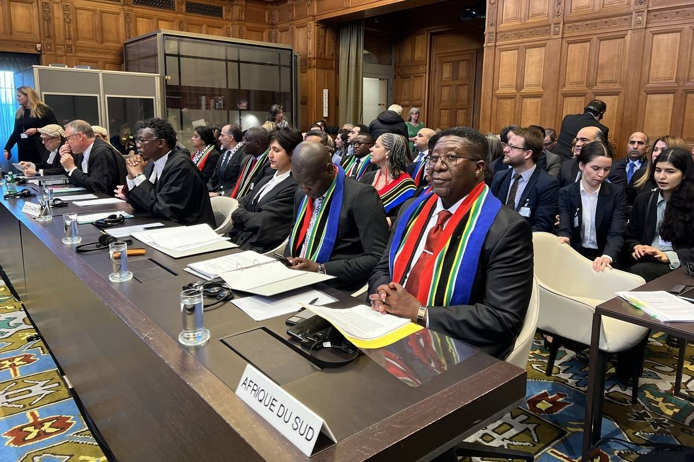
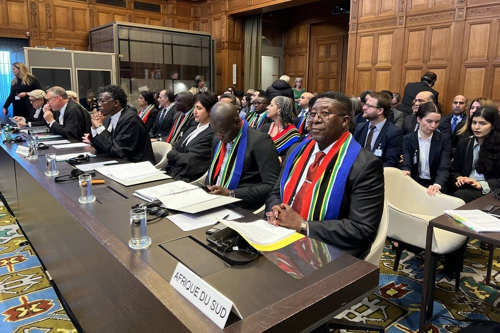

South Africa's Motion at the International Judicial Council
Recent developments in South Africa's support for Palestine...
 Read Full Article
Cape Town, the jewel of South Africa’s Western Cape, is a perfect blend of natural beauty, vibrant culture, and modern infrastructure, making it an ideal destination for digital nomads. Nestled between Table Mountain and the Atlantic Ocean, the city offers breathtaking landscapes, from pristine beaches to lush vineyards, perfect for work-life balance. The Western Cape region is known for its Mediterranean-like climate, with mild winters and warm summers, attracting those who enjoy an active outdoor lifestyle. Cape Town's bustling city life includes trendy cafes, co-working spaces, and a rapidly growing tech scene, providing digital nomads with the resources and networking opportunities they need to thrive. Beyond work, Cape Town boasts world-class attractions like the V&A Waterfront, the colorful Bo-Kaap neighborhood, and the historical Robben Island. For weekend getaways, nomads can explore the nearby Cape Winelands or take road trips along the scenic Garden Route. With a relatively affordable cost of living, fast internet, and a diverse, welcoming community, Cape Town and the Western Cape offer the perfect balance of productivity and adventure, making it a top destination for those who work remotely while exploring new cultures and landscapes.

Cape Town boasts a diverse cultural landscape, with a significant Islamic heritage...
 -->
Discover More
-->
Discover More
Recent developments in South Africa's support for Palestine...
 Read Full Article